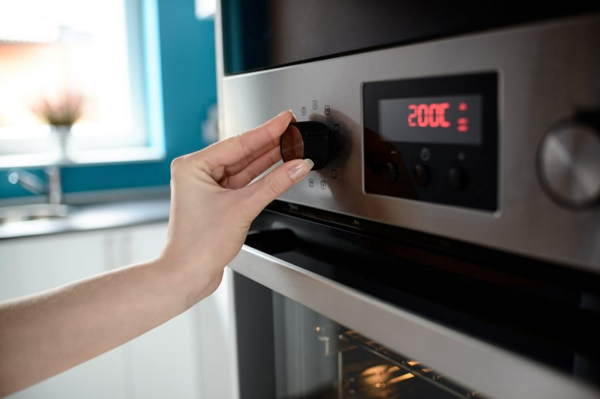
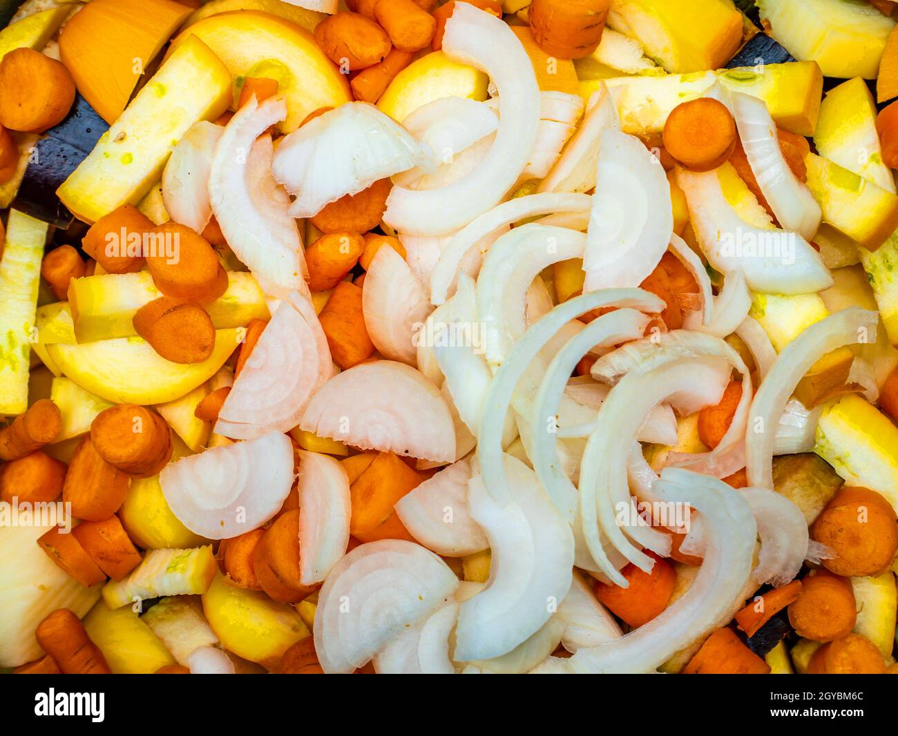
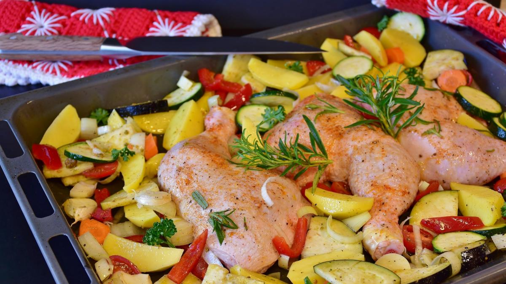
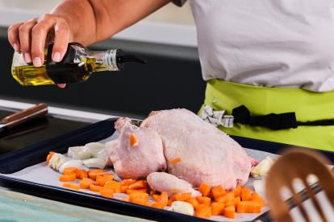
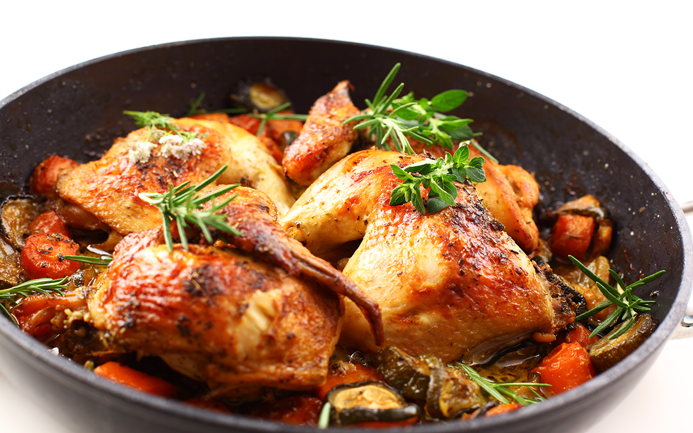

Segundo Plato
Pollo al Horno con Verduras Asadas
Ingredientes
- 2 pechugas de pollo
- 1 pimiento rojo
- 1 calabacin
- 1 zanahoria
- 1 cebolla
- 2 cucharadas de aceite
- Sal y pimienta al gusto
Pasos a Seguir
- Precalentar el horno a 200ºC

- Cortar las verduras en rodajas

- Colocar las pechugas de pollo y las verduras en una bandeja para hornear

- Rociar con aceite de olivar y salpimentar al gusto

- Hornear durante 25-30 minuittos hasta que el pollo este cocido y las verduras estén tiernas

Macros
| Macronutriente |
Cantidad |
| Calorías |
400 kcal |
| Proteínas |
35 g |
| Carbohidratos |
20 g |
| Grasas |
15 g |
Volver al menú
Volver al inicio